收录于合集
简 介
作者简介 ： 白联磊 中国国际问题研究院助理研究员 、 经济学博士 。
文章来源： 《复旦国际关系评论》第十八辑
责任编辑： 凌宇、晞哲
摘 要 ：经济实力迅速增强的同时长期排斥经济制裁是中国外交的一个奇特现象。中国曾经实施的 经济制裁具有次数少、防御性、有限支持多边制裁、不涉及意识形态等特征。既有研究缺乏关于该问题的直接讨论。相关文献具有两点缺憾，一是制裁政策的静态假设；二是忽视制裁成本的作用。探究中国长期排斥经济制裁工具的原因，需要回到经济制裁的本质，并使之具有动态特征。最后，本文认为中国，持经济优先战略的内外条件正在消失，提升国际经济权力的决心日益增强，中国对经济制裁工具的排斥将逐渐减弱。
关键词： 经济制裁 经济优先 经济权力 经济收益 政治收益
经济制裁是指在国际事务中以强制性的经济手段达成非经济目的的行为。作为外交工具的经济制裁早在伯罗奔尼撒战争中已经得到使用，随着时代的变迁，经济制裁工具的使用日益精细化，适用范围也日益广泛，在许多国际纠纷中，经济制裁由于成本更低而成为军事手段的最佳替代方案。然而，相比其他大国，中国更加排斥经济制裁，并且明确宣示反对在国际关系中动辄制裁或以制裁相威胁。经济实力迅速增强与长期排斥经济制裁并存是中国外交的一个奇特现象。本文认为造成这一奇特现象的原因来自两大因素，即国内层面的经济优先主义和国际层面经济权力的相对落后。这两大结构性因素的变化可能导致中国对经济制裁的态度发生变化。
本文接下来分为三个部分：第一部分概述中国排斥经济制裁的经验事实，并指出（1)对合法性和成功率的担忧不构成中国排斥经济制裁的主要原因，（2）既有文献对该问题的讨论并不充分，且研究思路和研究方法存在若干有待改进之处爹第二部分构建了一个包含政治收益和经济收益、政治权力和经济权力的数理模型，运用成本一收益分析思路，证明经济优先战略和经济权力滞后是导致中国排斥经济制裁工具的重要原因，进而作者认为经济优先战略的退出和国际经济权力的增强，正在弱化中国对经济制裁工具的排斥态度，丰富中国外交政策工具箱需提上日程。第三部分为简要总结。
****
一、 中国对外经济制裁：经验与文献
（一）中国排斥经济制裁的经验事实
中国政府从未明确宣称制裁任何国家、实体或个人，并且认为美国援引国内法发动对外制裁的行为违反了国际关系准则。但是，如果将未经宣示的制裁也包括在内，并非从未动用类似经济制裁的政策工具。根据霍夫鲍尔等人的研究，自新中国成立到2006年，中国曾经发动过三次对外经济制裁，分别是：1978年为报复阿尔巴尼亚反华言论而中断对阿经济援助；1978年为迫使越南从柬埔寨撤军而停止对越经济和军事援助；1992年中国为迫使法国停止对台军售，撤销了拟议中的部分中法大型合作项目以及停止进口法国小麦。阎梁（2012）认为，具有强烈经济制裁色彩的案例还包括：2008一2009年达赖访法前中国对法隐含地制裁威胁，以及达赖访法后中国部分航空公司取消或推迟与法国空中客车公司的合同；（2）2010年奥巴马总统宣布对台军售决定后，中国发出对相关美国公司的制裁警告；（3）2010年中日钓鱼岛风波中中国宣布暂停对美日稀土出口等。
尽管如此，中国仍然是世界大国中发动单边经济制裁次数最少的国家（见图1) 20世纪80年代以来中国仅因法国售台武器问题、达赖访法问题等实施过未言明的经济惩罚。在霍夫鲍尔等设计的经济制裁数据库中，中国是安理会五大常任理事国中发动经济制裁次数最少的国家， 1949一2006年仅发起过3次经济制裁，而美国则发动过116次、77个国家遭受过或正在遭受美国的经济制裁，其中26个国家遭受过两次以上的美国制裁。（见图1）即使作为非安理会常任理事国的加拿大、日本和印度，在发动经济制裁的次数方面也不逊色于中国。
通过与其他大国的比较可以发现，中国对外制裁次数少与以下现象有密切关系：第一，中国单边经济制裁是防御而非进攻工具。经济制裁是一种政策工具，既可用于防御亦可用于进攻。西方大国之所以实施对外经济制裁，往往不是因为本国利益受到损害，而是扩张既有收益，表现强烈的进攻性和扩张性。中国对外经济制裁的出发点则是维护而非扩张利益。在仅有的少数制裁案例中，中国动用经济制裁的目的是惩罚对我国国家利益的侵犯行为，被侵犯的国家利益又往往是事关主权和领土完整的核心利益，如达赖喇嘛问题、台独问题、钓鱼岛问题等。第二，中国单边经济制裁与意识形态无关。意识形态是美国为首的西方国家发动经济制裁的重要因素。“二战”后至2006年，全世界发生的主要经济制裁有116 起，其中以推进民主或人权为目标的经济制裁占26％。冷战结束后的头十年被称作“制裁时代”，十年内发生59起制裁，其中有26起直接针对民主或人权问题，有4起针对“独裁”政府和民主人权，有5起是为了支持民族自决或自治。中国发起的经济制裁或准经济制裁，则全部与意识形态无关，体现了中国“不以意识形态划线”的外交风格。第三，中国反对单边制裁，有限度参与多边制裁。中国长期反对单边经济制裁，尤其是全面制裁，但是承认联合国框架内的多边经济制裁具有合法性。为应对朝核、伊核问题、反恐问题等导致的国际危机，中国逐渐增大了对相关多边制裁的支持和参与力度。例如，2006年朝鲜启动核试验之后，中国曾拒绝参加联合国对朝鲜的全面经济制裁，而仅执行针对朝鲜大规模杀伤性武器项目及对朝鲜最高层的选择性制裁。2013年，面对朝核问题久拖不决的局面，中国支持加大对朝制裁力度，由此安理会达成了2094号决议，实施包括金融、航运等在内的更严厉制裁。2016年1月6日，朝鲜宣布成功进行氢弹试验，安理会宣布将立即着手起草包含相应行动的新的安理会决议。中国主张，安理会可通过新决议，采取进一步措施，使朝鲜为其行为付出必要代价、承担相应后果。．在反恐方面，中国亦支持安理会制裁“伊斯兰国" 的决议，试图通过包括资金冻结在内的国际制裁遏制恐怖主义的蔓延。上述特征与制裁次数少这一事实相结合，显示出中国对使用经济制裁持相当审慎的态度。
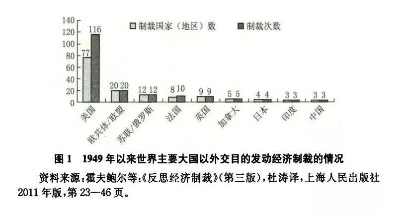
（二）已有解释及其不足
由于中国对经济制裁的排斥是一种长期现象，因而需要在规律性层面寻找原因。直观的思考会将制裁的成功率和制裁的法律基础作为两个重要变量。但是基于既有研究的分析可以发现，这些可能难以构成国家发动经济制裁的真正障碍。
首先，关于制裁成功率的讨论仍无定论。 关于经济制裁成功率的研究往往得出令人沮丧的结论，对于较为乐观的研究者而言，这个数字也只有34％左右，而在较悲观的批评者看来，排除军事因素的影响后，制裁成功率则不到17％。于是很自然的一个推论是，经济制裁的低成功率会弱化国家使用经济制裁的意愿。但事实恰恰相反一一在制裁成功率“很低” 的情况下，经济制裁的使用频率并未明显降低，甚至有升高的趋势。不过，一些研究者指出这其实是一个假象，理由是人们对“成功制裁”的定义存在问题。FrancescoGiumelli(2013)指出，多数研究将制裁政策之下目标国做出退让视作制裁成功的标志，但是事实上，目标国的行为改变并不是制裁的唯一目的。约束目标国的行为，甚至向其传递明确信号都属于制裁的目标。Drezner (2003）则指出，经济制裁的成功案例应该包括两部分：第一部分是制裁威胁产生作用的案例，第二部分是制裁威胁失败后，通过实施制裁达成目标的案例；而人们往往忽略第一部分，从而造成制裁成功率低的假象。将两类案例统一考察之后，他发现经济制裁平均的成功率在超过56％，为推进环境监管而发出的制裁/制裁威胁的成功率甚至达到72 .37％。但是这种论点又必然引发关于经济制裁定义的争论。由于有关制裁成功率的争论仍无定论，目前还无从判定制裁成功率是否影响了国家对经济制裁工具的选择。因此，通过经验数据得出的制裁成功率可能并不是影响国家制裁决策的关键变量。
其次，法律障碍其实并非不能克服。 对关于制裁的法律文献的梳理可以发现，当前发动制裁的主体既有主权国家亦有国际组织，而制裁的法律来源既可以是国际法也可能是国内法。在国际层面，《联合国宪章》第 41条规定“安全理事会得决定使用武力以外之办法，以实施其决议，并得促请联合国会员国执行此项办法。此项办法得包括经济关系、铁路、海运、航空、邮、电、无线电及其他交通工具之局部或全部停止，以及外交关系之断绝。”这成为安理会发动经济制裁及成员国执行该决议的法律基础。在区域组织层面，欧盟、非盟等国际组织均被成员国授权发动对外制裁。其中，欧盟执行对外经济制裁的合法性主要来自联合国安理会的制裁决议和欧盟基础条约中对使用“限制性措施”的规定，其中《欧盟运行条约》第 215款是核心条款，它规定欧盟可以通过中断与第三国的经济关系以达到政治和外交目的，并且这种限制性措施适用于以自然人和法人为目标的制裁行动。在国内法层面，关于经济制裁的立法包括两部分：一是为承担联合国安理会制裁义务而进行的配套立法；另一类为实施单边经济制裁而进行的立法。由于国家经常援引国际法建立相应的国内法，且基于国际法原则发动单边经济制裁的案例并不鲜见（如乌克兰危机中美国及其盟国对俄罗斯的经济制裁），意味着对打算发动对外制裁的国家而言，法律问题并非不可逾越的障碍。
由此可以得出结论：（1)缺乏一致的衡量标准导致我们很难断定制裁成功率能对国家制裁决策产生重要影响，因此对制裁成功率的疑虑也不应被视作中国长期排斥经济制裁工具的主要原因；（2）缺乏合法性的问题并非不可克服，因此法律基础也不能被视作中国长期排斥经济制裁的决定性因素。
**
**
上述探讨的结论令人沮丧，意味着我们需要回到经济制裁文献中寻找答案。梳理经济制裁的研究文献可以发现，大量作者将主要精力用于探讨经济制裁效果，．却很少解释国家为什么以及何时会发动经济制裁 (Drezner, 1998）。在仅有的少数文献中，霍夫鲍尔和斯科特等将国家发动制裁的动机简单总结为三条：一是显示其解决问题的能力；二是惩罚、阻止或威慑冒犯本国权威的行为；三是满足国内政治需要，如呼应国内惩罚不义之举的热情以收买人心等。但是，至于国家在何种情况下会将这些动机化为实践，霍夫鲍尔等并未给我们提供更多信息。Drezner （1998）将这类问题纳人博弈论框架内讨论。他发现，当制裁发起国预期到未来爆发冲突的可能性较大时，便倾向于发动经济制裁，即使此时发动制裁的经济成本很高；当制裁发起国的冲突预期较低时，发动经济制裁的意愿也随之降低，除非此时的制裁成本极低而给对方造成的损失极大。但是，经济制裁决策的影响因素不可能局限于国际层面，国内因素的作用也不容忽视。其实关注制裁决策的国内因素的文献在经济学领域已经非常丰富，例如,Kaempfer and Lowernberg 从公共选择路径讨论了经济制裁的多目标问题。他们将国内收益集团的影响纳人国家对外经济制裁的决策框架，并证明收益集团为了自身收益推动经济制裁会提高了经济制裁的成本，却不能给目标国造成最大伤害。Drury对此作了改进，他同时考察了国际因素和国内因素，并对7个假设进行了实证检验，结果发现美国总统发动制裁的意愿与国际冲突的紧张程度和国内失业率成正比，与目标国的挑衅性成反比，而国内选举周期对总统的制裁决策无影响。张曙光（2010）认为对经济制裁决策的分析，应包括对政治和安全目的的认识、对目标国威胁的认知、制裁政策与其他政策的匹配性、制裁的利弊得失、政治心理的影响五个层面。
简而言之，既有文献在讨论影响国家对外制裁决策的因素时多从客观和主观两个维度展开。客观维度如国际冲突的紧张程度、国内失业率、利益集团的作用等；主观维度如国家对冲突前景的判断、目标国的挑衅程度等。如果考虑到经济制裁的象征意义，则需要加上维护国家威望的意愿、国内政治的需要等。这种综合主观和客观、国际和国内的综合视角对后续研究具有借鉴意义，而其不足之处在于制裁政策的静态性假设，即在事件层次考察制裁的影响因素，以至缺少具有广泛适用性的规律性结论。
**
**
由此可以发现，研究“经济制裁的促发因素”的文献，多将研究对象置于外交政策学框架内考察，不涉及国际权力结构和国家战略的变化。但是，中国排斥经济制裁工具是一个长期现象，基于特定冲突案例的经验研究难以提供有力的解释。另外，既有研究常常忽视制裁成本的作用。但是在经济制裁的相关研究中，制裁成本是一个重要的变量。在国家的经济制裁决策中，制裁成本与制裁收益的权衡更是核心内容，而对成本收益的估计则受到国家发展战略和国际权力格局的影响。因此，要探究中国排斥经济制裁工具的原因，需要回到经济制裁的本质一一国家在经济成本与政治收益之间的权衡，并使之具有动态特征。为此， 本文将引人国内层面的国家发展战略和国际层面的权力格局两个因素，探讨它们对国家经济制裁决策的影响。
二、中国排斥经济制裁工具的数理解释模型
改革开放以来，中国提出“以经济建设为中心”的国家发展战略，这一战略在外交领域主要体现为“外交为经济服务”。时殷弘（2006）将这 现象称作中国外交战略基本目标的“经济化”或“经济第一”，但是他并未具体阐释这一现象的成因，以及这种政策取向如何影响了对外交政策工具的选择。接下来本文将探寻经济优先战略形成的根源，证明经济优先战略是导致中国排斥经济制裁工具的重要原因；之后本文将证明，经济权力滞后是中国排斥经济制裁工具的另一个重要原因。
（一）经济优先主义与制裁排斥
经济优先是指国家在实施对外政策的过程中，着重维护经济收益的增长，甚至为了维护长远经济收益在国际事务中暂时忍让。
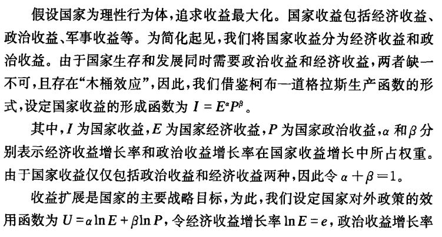
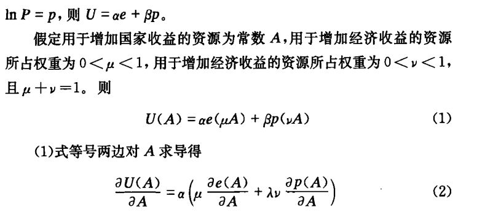
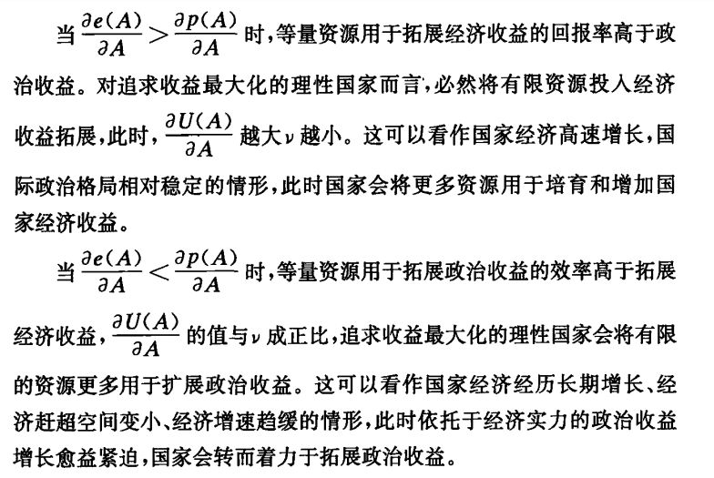
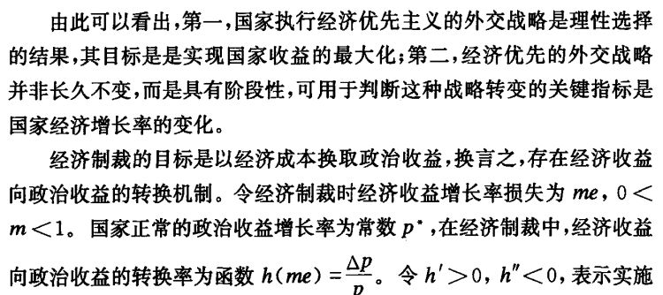
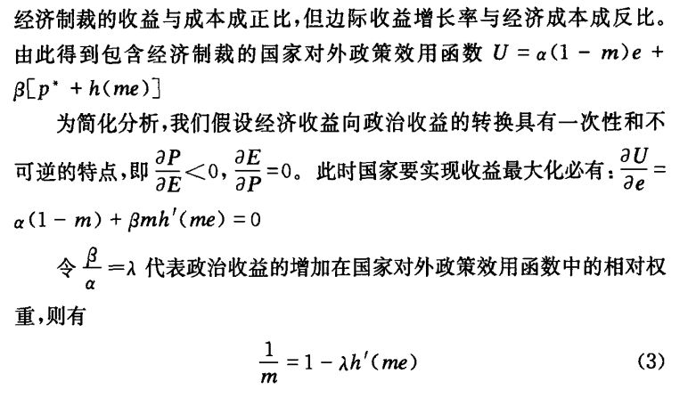
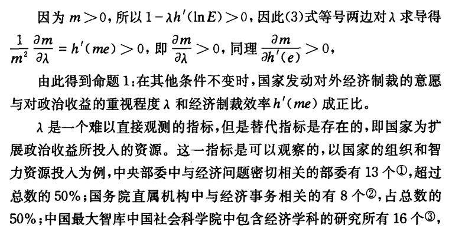
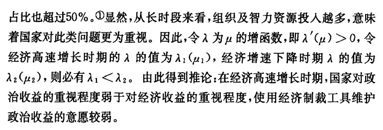
（二）经济权力滞后与制裁排斥
根据摩根索的定义，“权力指的是人对他人的思想和行动控制力量。”但是这仅仅是权力的最直接体现。在更多情况下，权力的作用是在未经言明的情况下发挥作用的。权力的分布构成国际体系的结构，结构决定单元的行动。对中国而言，“国际体系的结构因素从根本上制约着中国外交的选择范围，成为影响外交决策和行为的首要因素。”权力结构的持久性特征，意味着它从根本上制约着中国的经济制裁战略。
此处我们界定权力为规则性权力，最典型的表现为在重大国际组织内的投票权、规则制定权、话语权等。中国的国际经济权力具有滞后性，既滞后于国际政治权力亦滞后于自身的经济实力。中国是安理会五大常任理事国之一，对联合国审议的重大事务具有否决权，这是中国作为世界政治大国最显著的标志。中国在1971年即加入联合国，至今已40多年。此外，中国是世界仅有的五个合法核大国，对国际防核扩散事务具有重大影响力。最为关键的是，在国际政治的权力格局中，至少在投票权等规则性权力中，践行权力制衡原则，典型体现就是安理会的五大常任理事国具有同等的一票否决权。但是在国际经济领域，中国迟至2001年才加人 WTO，且长期缺乏对国际贸易规则的制定权。在重要多边金融组织，如世界银行和中，以中国为代表的新兴市场国家的投票权与自身的经济体量不匹配。2013年，中国的GDP占全球的比重超过12％，但是在国际货币基金组织中的投票权仅有3.65％，在世界银行的投票权仅有4.42％。
此外，这些重大国际经济组织并未援用联合国安理会的权力制衡原则，而是根据成立之初的国家经济实力确定投票权，美国一家独大，长期持有两大组织唯一的一票否决权。
为与上文的国家对外政策效用函数相匹配，假设在全球权力结构中国家的权力类型包括政治权力和经济权力两种，它们共同决定国家的全球地位。
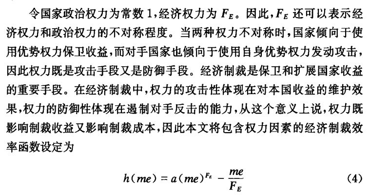
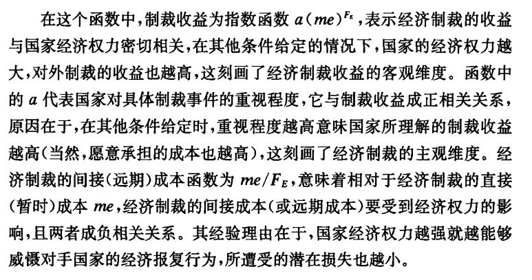
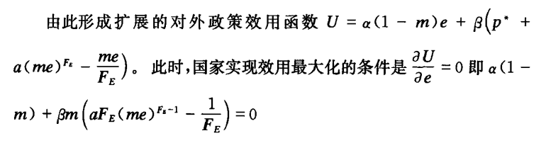
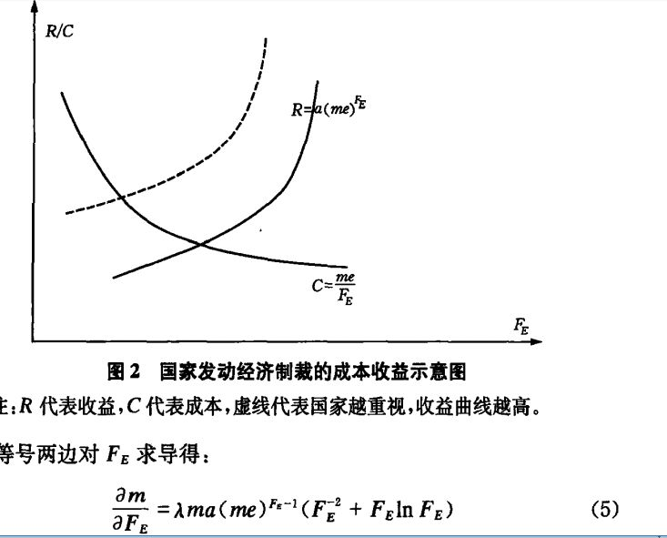
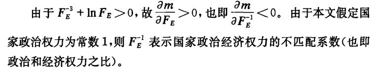 由此得到推论2：在国际体系内，国家的经济权力相比政治权力越弱，发动经济制裁的意愿越低，也越排斥经济制裁工具。
**
**
需要指出，这一推论的另一现实基础在于，国际政治权力占优可能在相当程度上弥补了国际经济权力的不足。事实上，权力的不均衡必然使优势权力弥补弱势权力成为常态，例如美国在遭遇不均衡衰落（即在一个或多个议题领域失去优势地位）时便往往利用其在优势领域的力量弥补其弱势领域。我们将此种现象称为“国际政治权力的红利”。对中国而言，这种红利同样存在。由于在国际核不扩散和地区安全中的特殊地位，中国可以在相关议题上施加重要影响，不仅牵制他国外交政策走向，亦能间接护佑中国的经济收益扩展。例如在联合国制裁伊朗问题上，中国竭力在履行防扩散义务和保护在伊石油利益之间寻求平衡，将中国经济利益的损失降到最低。
〈三）正在出现的趋势
模型的分析表明，经济优先主义的存在条件是经济收益的扩展效率高于政治收益的扩展效率。这一状况的形成 得益于两个前提 。其一，冷战后国际政治格局相对稳定，且中国的国际政治收益已接近极限。早在冷战结束之前，中国便开始实行结伴不结盟政策，致力于不以意识形态划线的务实外交，从而主动收缩了政治收益的范围；加人联合国使中国获得了超出自身经济地位的政治大国地位，意味着在相当长的时期内，中国以国际政治地位为代表的政治收益扩展已达极限。其二，冷战后国际经济格局的变化，为发展经济创造了有利条件，中国具备实现经济腾飞的巨大潜力。中国具备实现后发赶超的一系列内外条件，如有利于工业化的巨大人口红利、促进技术赶超的后发优势、国际产业转移的千载良机、冷战后的全球经济一体化等。改革开放以来，中国政府将工作重心由阶级斗争转向经济建设，冷战后的历届中国政府摒弃意识形态分歧，致力于拓展经济收益，谋求与他国的合作共赢。
当前，上述两个条件正在发生改变。 首先，中国经济发展面临新的挑战。 从国内角度看，随着中国经济增长由高速增长进人中高增长，中国潜在经济增长率已经显著下降。近期中国推出“一带一路”战略构想具有鲜明的经济含义，但是由于所涉区域多为欠发达地区，而且面临政治、安全等多重风险，很难实现中国“转移过剩产能”、“外汇储备保值增值”等经济目的，尤其是考虑到中国作为超大型经济体，内部的经济问题几乎不可能依靠经济欠发达的沿线国来解决。从国外角度看，中国海外经济收益的扩展逐渐面临政治和安全约束。2011年的利比亚危机给中国造成巨大经济损失。而后危机时代主导收益分配的“利比亚之友”也只给予中国观察员地位，凸显了中国海外经济利益保护的软肋。2014年9月，在南苏丹内战的安全威胁日益迫近之际，中国首次决定派遣战斗部队担负维和任务，将在事实上维护中国在南苏丹的战略和经济利益。 其次，中国扩展国际政治收益的外在环境也在发生变化。 一方面，随着经济快速崛起，中国不再仅仅是跛足大国，而是在经济总量、军费开支等方面均名列世界第二的具有全球影响力的大国。国际社会希望中国担负更大国际责任的呼声日益高涨，中国自身也在推行更加积极有为的外交战略。中国实现外交抱负所需要的国际政治权力与现实拥有的国际政治权力之间的差距将持续缩小。考虑到中国的崛起态势仍将继续，中国外交抱负的伸张意味着中国运用国际政治权力的频率和强度将大大提高。另一方面，以联合国安理会为代表的既有国际政治权力格局是二次世界大战的产物，当前联合国成员的规模与结构均发生了巨大变化，安理会改革成为不可逆转的趋势，以扩员为重点的改革必然削弱中国在安理会的地位和权力。
命题1及推论2表明，经济权力不足导致的制裁效率低下是导致制裁工具遭到排斥的重要原因。 中国经济权力不足体现在经济权力弱于政治权力，经济权力与经济实力不匹配。以中国为代表的新兴市场国家谋求在世界银行、国际货币基金组织等全球多边金融机构中获得与自身经济实力和经济贡献相匹配的投票权和话语权，并致力于获取新一轮国际贸易规则的制定权。但是，由于权力的零和性质，中国的经济权力诉求遭遇了重重阻碍。以IMF改革为例，2010年的改革方案计划将6％的投票权由代表性过高国家转移到代表性不足国家，但是由于美国国会的阻挠，这一改革方案拖延长达四年才于2015年12月落实。国际经济秩序的 “体制内改革”受阻迫使中国寻求在“体制外尝试”。2014年以来，中国在继续推进多个自贸区谈判、促进贸易自由化的同时，加强金砖国家协调与合作，推出“一带一路”战略构想，并配套成立了金砖国家“新开发银行”和 “应急储备安排”、丝路基金、“亚洲基础设施投资银行”等金融机制。这既是对现有多边金融机构的补充，更是对现有国际金融秩序改革缓慢的有力回应。即使短期内提高中国的国际经济权力仍面临复杂挑战，但考虑到中国经济的庞大基数，以及与其他国家相比仍然快得多的增长速度，中国国际经济权力的提升是大势所趋。
三、结语
在国家是理性行为体的假设下，国家是否使用经济制裁工具，取决于对成本和收益的衡量。 本文的理论分析表明，对追求收益最大化的国家而言，国家是否倾向于使用经济制裁工具取决于两个因素：第一，国家对政治收益和经济收益的权衡；第二，经济制裁效率，这涉及达到同样目标需要付出的直接和间接成本。 本文认为，中国当前执行了经济优先主义的发展战略，并面临国际经济权力滞后的局面。经济优先意味着在国家对外政策效用函数中，扩展经济收益比拓展政治收益更重要，因此必然排斥经济制裁工具的使用；中国经济权力的滞后意味着当中国主动发起经济制裁时，有限的经济权力不足以抵御他国的反制裁，由此 ****带来的高昂制裁成本削弱了中国使用经济制裁工具的意愿。
当前中国国内经济增长潜力逼近极限，海外经济收益面临政治和安全约束，国际政治权力格局面临重新调整压力，意味着中国维持经济优先主义的内外条件正在消失。中国积极构建新型多边国际金融机构，提出多样化的区域经济合作倡议，努力将中国的经济实力转化为战略影响力，实现投票权、话语权和规则制定权与经济贡献相匹配，意味着中国正在为提升国际经济权力夯实基础。经济优先主义的弱化和中国经济权力的提升，必将导致中国对经济制裁工具的排斥随之减弱。对外交决策者而言，过去偏重政治和外交手段的政策工具箱正在变得过时，而一个包含经济制裁在内的更均衡的政策工具箱将为中国外交增添新的动力。
*注释及参考文献详见原文
声明 此文由国政学人微信公众平台编辑首发